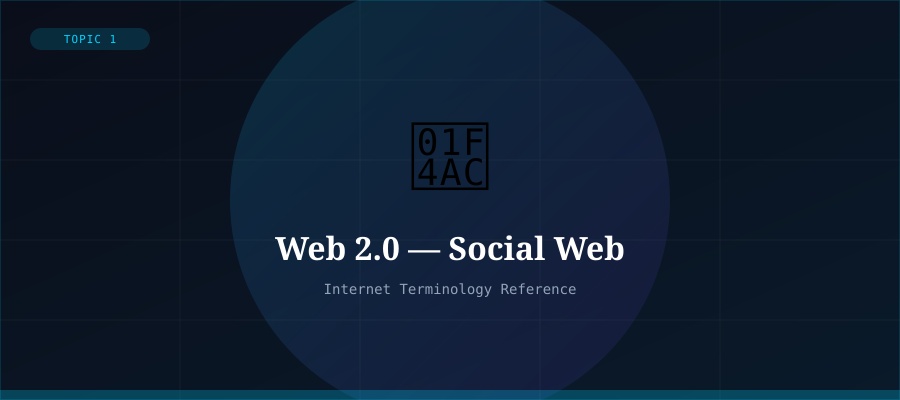

What is Web 2.0?
Web 2.0 is the second generation of the World Wide Web, emerging around 2004 and still largely dominant today. The key shift was from static, one-way content delivery to dynamic, interactive, user-generated content. The 'read-only' web became the 'read-write' web.
The term was popularised by Tim O'Reilly in 2004. Web 2.0 describes both a technical evolution (AJAX, APIs, rich web apps) and a social one (blogs, social networks, wikis, crowdsourcing).
Defining Characteristics
- User-generated content (blogs, social media posts, reviews)
- Social networking (Facebook, Twitter/X, Instagram, LinkedIn)
- Collaborative platforms (Wikipedia, GitHub, Google Docs)
- Rich Internet Applications with dynamic, app-like interfaces
- AJAX enabling pages to update without full reload
- APIs enabling third-party integrations and mashups
- Freemium models and advertising-funded platforms
Key Technologies
Web 2.0 was powered by AJAX (Asynchronous JavaScript and XML), which allowed web pages to fetch data and update dynamically without page reloads. CSS3 and HTML5 enabled richer visual experiences. RESTful APIs made it easy to connect services together.
Mobile smartphones supercharged Web 2.0, putting social media and user-created content in billions of pockets worldwide.
Criticisms
Web 2.0 also brought significant concerns: data centralisation in the hands of a few giant companies, surveillance capitalism (monetising user data), algorithmic manipulation, misinformation, and the erosion of privacy. These issues motivate the drive toward Web 3.0.